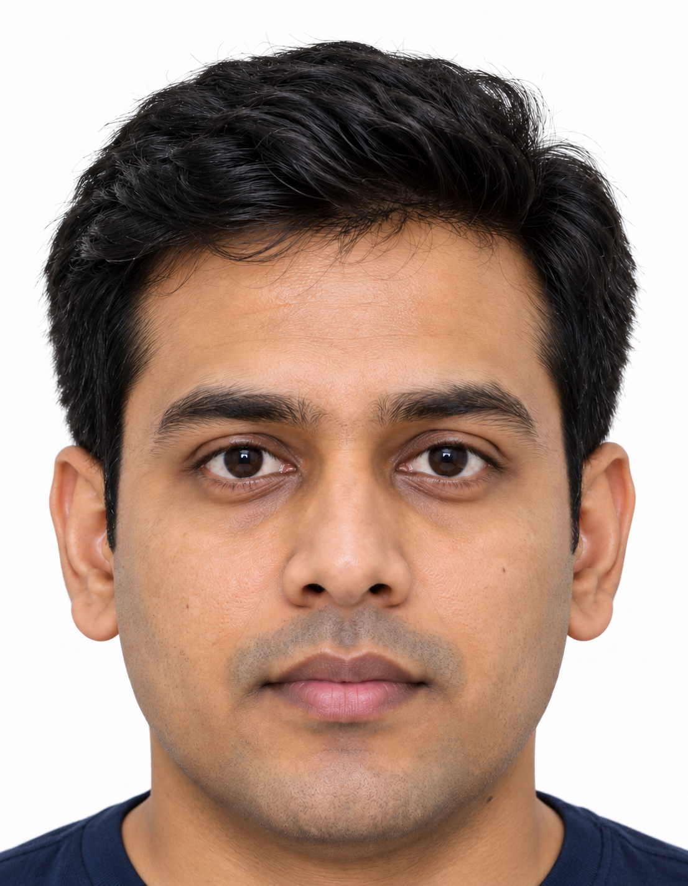

A passport photo.
One step closer.
A little less paperwork. Upload, frame, and download your photo
in the exact size for your Indian passport application.
01 Frame your photo
INDIAN PASSPORTView sample photo reference ↗

- Full head centered, from hair to chin
- Close crop with the top of the shoulders
- Plain white background and even lighting
- Eyes visible, no sunglasses, lips relaxed
Use the guides to aim for 80–85% head coverage. Your download is 630 × 810 pixels.
This fictional example illustrates the look; it is not an official sample or a guarantee of acceptance. Use your own unaltered photo for your application.
Camera is off.
Use your iPhone camera
On a Mac, enable Continuity Camera on your iPhone. Sign in to the same Apple Account with two-factor authentication, enable Wi-Fi and Bluetooth, and keep the iPhone nearby, locked and mounted with its rear camera facing you. A USB connection can also help. Select your iPhone here once the browser makes it available.
If it does not appear, try opening this page in Safari or Chrome. This app can select only cameras exposed by your browser. On an iPhone, use the camera selector to choose an available front or rear camera.
Apple’s Continuity Camera setup ↗Start with a good photo
Face the camera, find even lighting,
and stand against a white background.
Your original photo is never uploaded to a server.
Photo requirements & framing tips
Small details.
A smoother application.
Include your full head and the top of your shoulders. Aim for 80–85% head coverage.
Use a photo already taken against white. This tool preserves your background.
Look straight ahead, eyes open, with a natural expression and even lighting.
Built to the specifications in your supplied guidelines. Automated screening is advisory and can miss problems. Check your application portal for any additional file-size rules. Framing guides and automated checks are approximate; final acceptance is determined by the passport authority. Religious head coverings must leave the face clearly visible.